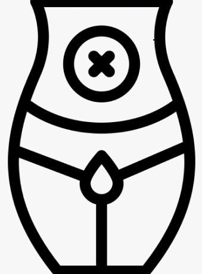
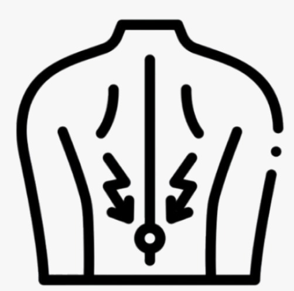
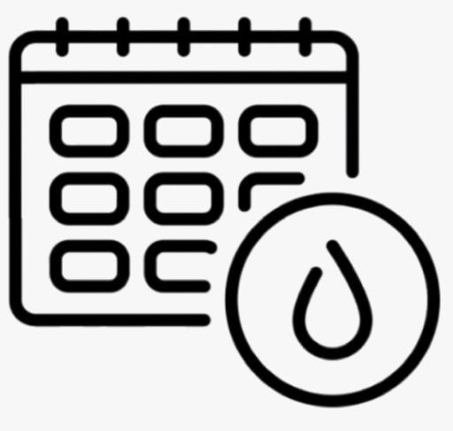
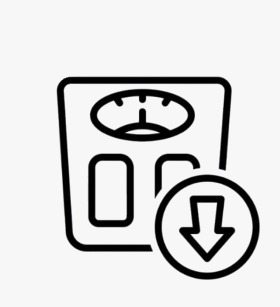
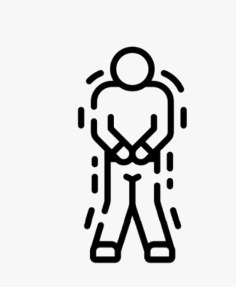
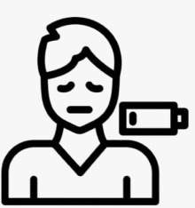

Conheça os sintomas do cancro do colo do útero
O cancro do colo do útero manifesta-se, na maioria dos casos, de forma assintomática ou através de sintomas pouco específicos e vagos quando se encontra em estado inicial, sendo frequentemente detetado no âmbito de programas de rastreio.

Hemorragias após relações sexuais
Dor pélvica

Dor lombar
Corrimento vaginal fora do comum

Períodos menstruais mais prolongados

Perda de peso sem motivo aparente

Aumento da vontade de urinar

Cansaço frequente

Se sentir algum destes sintomas, especialmente se forem persistentes, consulte imediatamente o seu médico.
O diagnóstico e tratamento precoce podem fazer a diferença.

Leitor de texto

Monocromático

Modo escuro